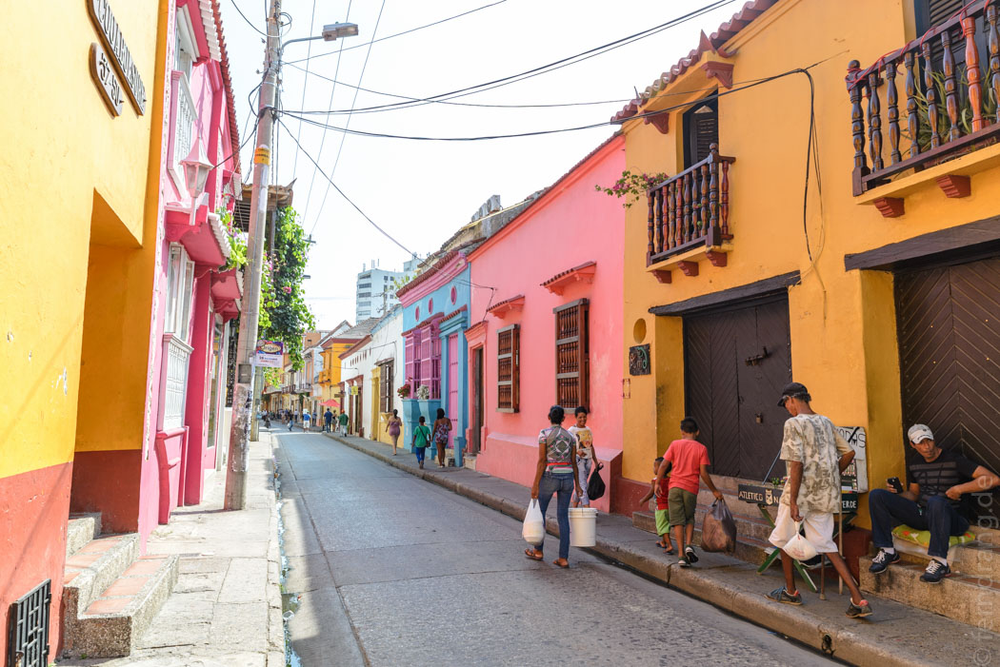
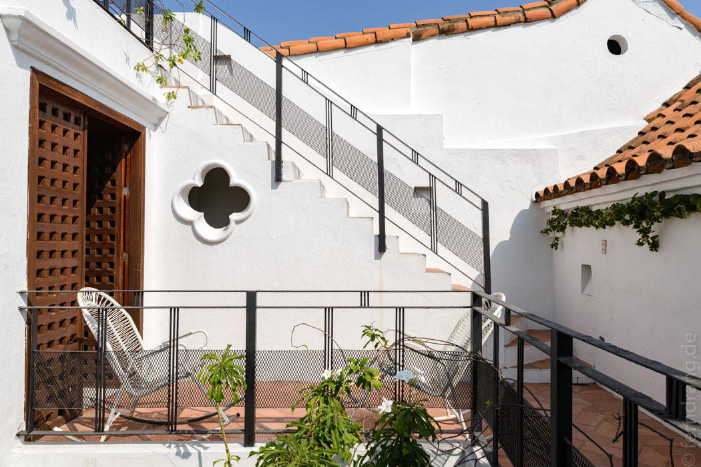
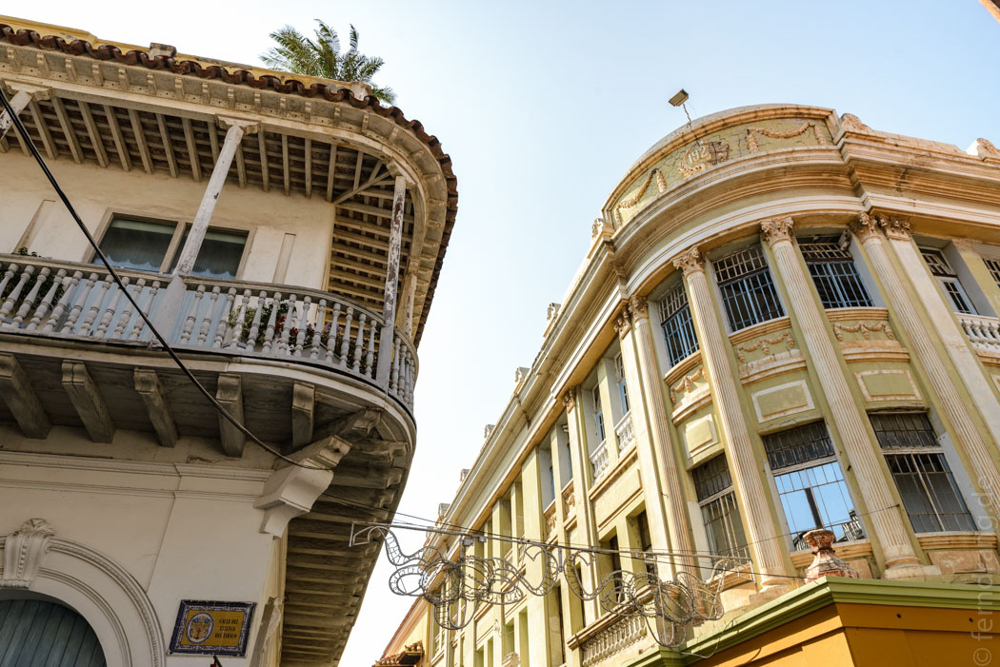
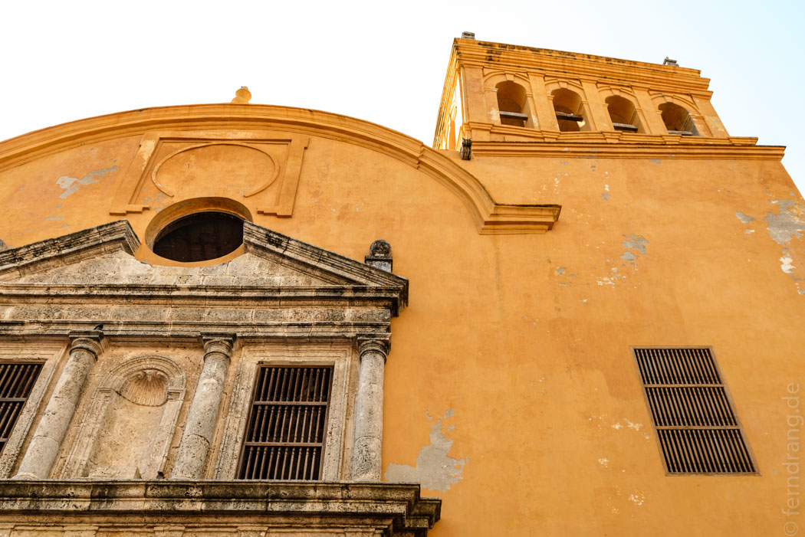
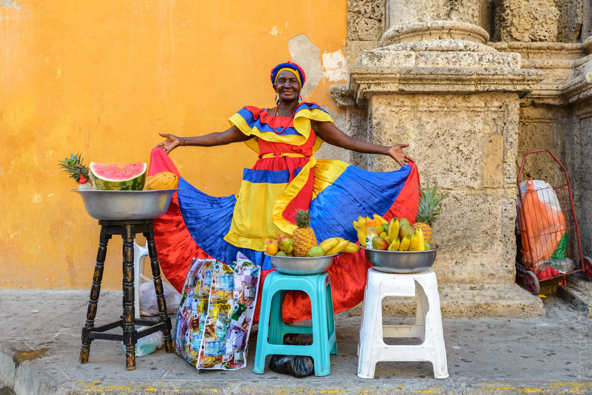

Gegen 6 Uhr morgens sind wir plangemäß am Busbahnhof von Bogota angekommen. Da wir Die Stadt schon gesehen hatten, sind wir direkt zum Flughafen gefahren und nach Cartagena an die Karibikküste geflogen. Dort sollte der erholsame Teil beginnen. Schon am Flughafen kam uns die karibische Hitze entgegen.
Mit dem Taxi haben wir uns durch den mittäglichen Stau in die Altstadt geschoben, die von mächtigen Fort-Mauern umgeben ist. Außerhalb der Mauern säumen Hochhäuser die Küste. Auf der Halbinsel vor dem Hafen scheint jedes zweite Haus noch im Bau zu sein. Innerhalb der Mauern verwandelt sich das hässlich-tropische Stadtbild plötzlich in ein Musterbeispiel der Kolonial-Architektur. Die flachen Häuser haben schön gedeckte Dächer und sind in bunten Farben gestrichen. Deswegen protzt Cartagena damit, die schönste (Alt)stadt des Kontinents zu haben.
Unsere Unterkunft "Casa Marco Polo" ist da keine Ausnahme. In dem schmalen Häuschen gibt es nur drei Zimmer, die sich mit kleinen Terrassen übereinander stapeln. Von oben blickt man über die Dächer der Altstadt und die hässlichen Hochhäuser, die dahinter liegen. Die Zimmer sind riesig und der Wirt Marco ist äußerst zuvorkommend.
Natürlich konnten wir es nicht lassen und haben gleich einen Spaziergang durch die Stadt unternommen. Die Straßen der Altstadt sind voller Restaurants und Geschäfte und machen einen extrem touristischen Eindruck. Man wird in englisch angesprochen und muss ständig den Pferdekutschen aus dem Weg springen, die hier zuhauf als Vehikel für Selfie-Stadttour-Videos ("Ich vor der Kulisse der Stadt") herangezogen werden. Die Geschäfte sind deutlich teurer und teilweise eleganter als im Rest des Landes. Trotzdem haben sich die Gassen ein gewisses Flair bewahrt, das an ein kleineres Havanna erinnert.
  Das außerhalb der Mauer angrenzende Backpacker-Viertel "Getsemani" ist größtenteils unansehnlich und teilweise etwas siffig. Rucksackreisender könnte man hier als Schimpfwort auffassen. Dennoch verstecken sich in der Gegend einige schicke Restaurants. Wir sind abends aber in der Altstadt zu "Wippy" gegangen, das Restaurant einer Freundin von sehr netten Kolumbianern, die wir am Amazonas kennengelernt hatten. Der Laden hat sich als Pasta-Himmel erwiesen, wo wir uns mit köstlichen hausgemachten Nudeln verwöhnt haben.